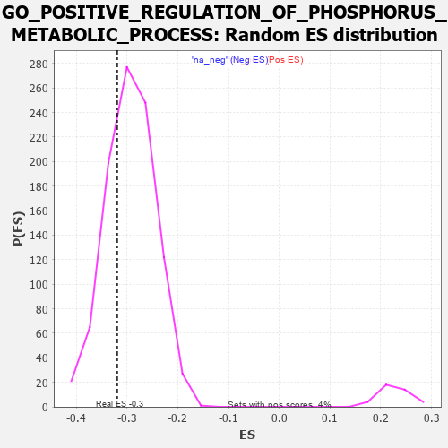

| | | Dataset | 7d |
| Phenotype | NoPhenotypeAvailable |
| Upregulated in class | na_neg |
| GeneSet | GO_POSITIVE_REGULATION_OF_PHOSPHORUS_METABOLIC_PROCESS |
| Enrichment Score (ES) | -0.31931508 |
| Normalized Enrichment Score (NES) | -1.0904523 |
| Nominal p-value | 0.29270834 |
| FDR q-value | 0.7601919 |
| FWER p-Value | 1.0 |
Table: GSEA Results Summary
 Fig 1: Enrichment plot: GO_POSITIVE_REGULATION_OF_PHOSPHORUS_METABOLIC_PROCESS
Fig 1: Enrichment plot: GO_POSITIVE_REGULATION_OF_PHOSPHORUS_METABOLIC_PROCESS
Profile of the Running ES Score & Positions of GeneSet Members on the Rank Ordered List
| PROBE | GENE SYMBOL | GENE_TITLE | RANK IN GENE LIST | RANK METRIC SCORE | RUNNING ES | CORE ENRICHMENT | | 1 | TGFB3 | | | 49 | 2.654 | 0.0160 | No |
| 2 | UBE2K | | | 94 | 1.739 | 0.0249 | No |
| 3 | IRS1 | | | 98 | 1.659 | 0.0385 | No |
| 4 | ADCY8 | | | 124 | 1.418 | 0.0472 | No |
| 5 | AXIN1 | | | 166 | 1.159 | 0.0516 | No |
| 6 | WNT16 | | | 198 | 1.072 | 0.0566 | No |
| 7 | SPDYA | | | 211 | 1.026 | 0.0637 | No |
| 8 | HGF | | | 276 | 0.870 | 0.0628 | No |
| 9 | WEE2 | | | 333 | 0.766 | 0.0620 | No |
| 10 | GSK3A | | | 351 | 0.745 | 0.0661 | No |
| 11 | ARNT | | | 357 | 0.741 | 0.0716 | No |
| 12 | CLSPN | | | 379 | 0.719 | 0.0750 | No |
| 13 | AXIN2 | | | 383 | 0.713 | 0.0806 | No |
| 14 | NBN | | | 405 | 0.696 | 0.0837 | No |
| 15 | LRP1 | | | 470 | 0.648 | 0.0809 | No |
| 16 | PKN1 | | | 535 | 0.619 | 0.0779 | No |
| 17 | CCNB1 | | | 581 | 0.601 | 0.0771 | No |
| 18 | DHX33 | | | 605 | 0.593 | 0.0791 | No |
| 19 | GLMN | | | 632 | 0.583 | 0.0807 | No |
| 20 | HES5 | | | 661 | 0.571 | 0.0819 | No |
| 21 | MRE11 | | | 693 | 0.560 | 0.0826 | No |
| 22 | XRCC6 | | | 694 | 0.560 | 0.0873 | No |
| 23 | CDC6 | | | 709 | 0.557 | 0.0902 | No |
| 24 | STOX1 | | | 905 | 0.506 | 0.0693 | No |
| 25 | PTPA | | | 947 | 0.497 | 0.0682 | No |
| 26 | CCND2 | | | 949 | 0.496 | 0.0722 | No |
| 27 | DVL3 | | | 971 | 0.490 | 0.0736 | No |
| 28 | TELO2 | | | 1006 | 0.482 | 0.0733 | No |
| 29 | AKT1 | | | 1040 | 0.476 | 0.0730 | No |
| 30 | MEF2C | | | 1054 | 0.473 | 0.0753 | No |
| 31 | FZD10 | | | 1065 | 0.470 | 0.0780 | No |
| 32 | CDK10 | | | 1092 | 0.465 | 0.0785 | No |
| 33 | SRC | | | 1128 | 0.459 | 0.0779 | No |
| 34 | CKS2 | | | 1165 | 0.452 | 0.0770 | No |
| 35 | CCNY | | | 1168 | 0.451 | 0.0806 | No |
| 36 | DOCK7 | | | 1398 | 0.410 | 0.0545 | No |
| 37 | P2RY1 | | | 1416 | 0.407 | 0.0557 | No |
| 38 | PTBP1 | | | 1441 | 0.402 | 0.0560 | No |
| 39 | TIMP2 | | | 1478 | 0.394 | 0.0547 | No |
| 40 | INHBB | | | 1514 | 0.388 | 0.0534 | No |
| 41 | WDFY2 | | | 1522 | 0.388 | 0.0558 | No |
| 42 | FZD1 | | | 1574 | 0.379 | 0.0524 | No |
| 43 | ERP29 | | | 1589 | 0.376 | 0.0537 | No |
| 44 | CCNK | | | 1596 | 0.374 | 0.0561 | No |
| 45 | TPX2 | | | 1708 | 0.355 | 0.0448 | No |
| 46 | MRNIP | | | 1743 | 0.346 | 0.0433 | No |
| 47 | FNIP1 | | | 1798 | 0.338 | 0.0392 | No |
| 48 | FMR1 | | | 1816 | 0.334 | 0.0398 | No |
| 49 | GATA4 | | | 1837 | 0.330 | 0.0400 | No |
| 50 | TRIM5 | | | 1852 | 0.327 | 0.0409 | No |
| 51 | SMAD4 | | | 1860 | 0.326 | 0.0427 | No |
| 52 | PAK3 | | | 1889 | 0.322 | 0.0418 | No |
| 53 | HACD3 | | | 1932 | 0.315 | 0.0391 | No |
| 54 | MOB1B | | | 1991 | 0.306 | 0.0342 | No |
| 55 | ROR1 | | | 1993 | 0.306 | 0.0366 | No |
| 56 | RAF1 | | | 2011 | 0.303 | 0.0370 | No |
| 57 | CENPE | | | 2086 | 0.293 | 0.0299 | No |
| 58 | BMP7 | | | 2107 | 0.290 | 0.0297 | No |
| 59 | DDR1 | | | 2176 | 0.280 | 0.0233 | No |
| 60 | SYK | | | 2186 | 0.278 | 0.0245 | No |
| 61 | SHC2 | | | 2263 | 0.266 | 0.0169 | No |
| 62 | MIF | | | 2357 | 0.252 | 0.0070 | No |
| 63 | SYMPK | | | 2381 | 0.248 | 0.0062 | No |
| 64 | HIPK2 | | | 2389 | 0.247 | 0.0073 | No |
| 65 | MET | | | 2430 | 0.240 | 0.0042 | No |
| 66 | EMC10 | | | 2607 | 0.211 | -0.0167 | No |
| 67 | VAV3 | | | 2614 | 0.210 | -0.0157 | No |
| 68 | SASH1 | | | 2682 | 0.201 | -0.0227 | No |
| 69 | DSCAM | | | 2689 | 0.200 | -0.0218 | No |
| 70 | PHB2 | | | 2712 | 0.197 | -0.0230 | No |
| 71 | SYAP1 | | | 2811 | 0.182 | -0.0341 | No |
| 72 | FGFR2 | | | 2895 | 0.167 | -0.0434 | No |
| 73 | ACVR1 | | | 2932 | 0.161 | -0.0467 | No |
| 74 | TAZ | | | 2933 | 0.161 | -0.0453 | No |
| 75 | ISCU | | | 2989 | 0.151 | -0.0511 | No |
| 76 | TIGAR | | | 3091 | 0.138 | -0.0630 | No |
| 77 | ERN2 | | | 3160 | 0.129 | -0.0707 | No |
| 78 | GCNT2 | | | 3162 | 0.128 | -0.0698 | No |
| 79 | AKTIP | | | 3178 | 0.125 | -0.0706 | No |
| 80 | SMAD3 | | | 3303 | 0.105 | -0.0858 | No |
| 81 | TAB1 | | | 3351 | 0.097 | -0.0910 | No |
| 82 | DDX3X | | | 3388 | 0.091 | -0.0949 | No |
| 83 | CDK5 | | | 3480 | 0.080 | -0.1059 | No |
| 84 | HDAC3 | | | 3528 | 0.072 | -0.1114 | No |
| 85 | PIN1 | | | 3543 | 0.069 | -0.1126 | No |
| 86 | MAPK3 | | | 3589 | 0.062 | -0.1179 | No |
| 87 | STK25 | | | 3602 | 0.059 | -0.1190 | No |
| 88 | DOK7 | | | 3603 | 0.059 | -0.1185 | No |
| 89 | HSF1 | | | 3718 | 0.039 | -0.1328 | No |
| 90 | DAXX | | | 3722 | 0.038 | -0.1329 | No |
| 91 | DGKQ | | | 3856 | 0.020 | -0.1499 | No |
| 92 | DGKZ | | | 3879 | 0.015 | -0.1526 | No |
| 93 | GCN1 | | | 3923 | 0.006 | -0.1581 | No |
| 94 | NRG3 | | | 3925 | 0.005 | -0.1582 | No |
| 95 | IGF1R | | | 3970 | -0.002 | -0.1639 | No |
| 96 | TAL1 | | | 4064 | -0.018 | -0.1757 | No |
| 97 | SFRP2 | | | 4065 | -0.018 | -0.1755 | No |
| 98 | CSF1 | | | 4074 | -0.019 | -0.1764 | No |
| 99 | PDE8A | | | 4097 | -0.023 | -0.1791 | No |
| 100 | TRAF1 | | | 4104 | -0.024 | -0.1796 | No |
| 101 | MTOR | | | 4114 | -0.025 | -0.1806 | No |
| 102 | ABL1 | | | 4125 | -0.027 | -0.1816 | No |
| 103 | PLCE1 | | | 4127 | -0.028 | -0.1815 | No |
| 104 | CRK | | | 4139 | -0.031 | -0.1827 | No |
| 105 | WNK3 | | | 4153 | -0.034 | -0.1841 | No |
| 106 | VAC14 | | | 4225 | -0.046 | -0.1929 | No |
| 107 | RPTOR | | | 4252 | -0.050 | -0.1958 | No |
| 108 | WNT11 | | | 4282 | -0.056 | -0.1991 | No |
| 109 | BAG4 | | | 4314 | -0.061 | -0.2025 | No |
| 110 | ADRB2 | | | 4352 | -0.068 | -0.2067 | No |
| 111 | MTMR9 | | | 4387 | -0.074 | -0.2105 | No |
| 112 | PRR5L | | | 4418 | -0.080 | -0.2137 | No |
| 113 | MYDGF | | | 4429 | -0.081 | -0.2143 | No |
| 114 | ERCC6 | | | 4464 | -0.087 | -0.2180 | No |
| 115 | LRRK2 | | | 4467 | -0.087 | -0.2175 | No |
| 116 | MOB2 | | | 4504 | -0.095 | -0.2213 | No |
| 117 | ILK | | | 4510 | -0.096 | -0.2212 | No |
| 118 | NPTN | | | 4519 | -0.098 | -0.2214 | No |
| 119 | NTRK2 | | | 4543 | -0.104 | -0.2235 | No |
| 120 | ADTRP | | | 4612 | -0.120 | -0.2312 | No |
| 121 | FGFR3 | | | 4656 | -0.129 | -0.2357 | No |
| 122 | RAP1B | | | 4706 | -0.140 | -0.2408 | No |
| 123 | TNIK | | | 4804 | -0.158 | -0.2520 | No |
| 124 | FBXW7 | | | 4816 | -0.161 | -0.2521 | No |
| 125 | TAOK3 | | | 4823 | -0.162 | -0.2515 | No |
| 126 | DLG1 | | | 4860 | -0.169 | -0.2547 | No |
| 127 | CLU | | | 4889 | -0.174 | -0.2568 | No |
| 128 | MARK2 | | | 4899 | -0.177 | -0.2565 | No |
| 129 | FZD4 | | | 4940 | -0.186 | -0.2601 | No |
| 130 | XRCC5 | | | 4946 | -0.187 | -0.2592 | No |
| 131 | PDPK1 | | | 5043 | -0.207 | -0.2698 | No |
| 132 | RAP2C | | | 5073 | -0.218 | -0.2717 | No |
| 133 | DRD2 | | | 5088 | -0.221 | -0.2717 | No |
| 134 | ITSN1 | | | 5094 | -0.222 | -0.2705 | No |
| 135 | MMP9 | | | 5108 | -0.227 | -0.2702 | No |
| 136 | FLCN | | | 5140 | -0.235 | -0.2723 | No |
| 137 | TBX1 | | | 5166 | -0.241 | -0.2735 | No |
| 138 | NEK10 | | | 5180 | -0.244 | -0.2731 | No |
| 139 | HDAC6 | | | 5183 | -0.244 | -0.2713 | No |
| 140 | ATM | | | 5210 | -0.249 | -0.2725 | No |
| 141 | PTEN | | | 5262 | -0.261 | -0.2769 | No |
| 142 | CDK1 | | | 5264 | -0.262 | -0.2749 | No |
| 143 | EPHA4 | | | 5273 | -0.265 | -0.2737 | No |
| 144 | MAGI2 | | | 5295 | -0.269 | -0.2741 | No |
| 145 | RAD50 | | | 5314 | -0.276 | -0.2741 | No |
| 146 | EPHA1 | | | 5349 | -0.285 | -0.2761 | No |
| 147 | FZD5 | | | 5386 | -0.292 | -0.2783 | No |
| 148 | DLG4 | | | 5388 | -0.293 | -0.2759 | No |
| 149 | LATS1 | | | 5412 | -0.298 | -0.2764 | No |
| 150 | FGFR1 | | | 5543 | -0.332 | -0.2904 | No |
| 151 | SPHK1 | | | 5576 | -0.339 | -0.2917 | No |
| 152 | ROR2 | | | 5626 | -0.353 | -0.2950 | No |
| 153 | WNK1 | | | 5650 | -0.362 | -0.2949 | No |
| 154 | MADD | | | 5686 | -0.371 | -0.2963 | No |
| 155 | CALCR | | | 5730 | -0.386 | -0.2986 | No |
| 156 | TRPC6 | | | 5784 | -0.401 | -0.3021 | No |
| 157 | CCNT2 | | | 5804 | -0.406 | -0.3011 | No |
| 158 | VLDLR | | | 5898 | -0.434 | -0.3095 | No |
| 159 | STK11 | | | 5922 | -0.443 | -0.3087 | No |
| 160 | TTBK1 | | | 5969 | -0.460 | -0.3108 | No |
| 161 | RAC1 | | | 6036 | -0.484 | -0.3152 | Yes |
| 162 | FZD8 | | | 6051 | -0.490 | -0.3129 | Yes |
| 163 | PLK1 | | | 6082 | -0.500 | -0.3126 | Yes |
| 164 | DBNL | | | 6084 | -0.501 | -0.3085 | Yes |
| 165 | UBB | | | 6090 | -0.503 | -0.3049 | Yes |
| 166 | PIFO | | | 6102 | -0.506 | -0.3021 | Yes |
| 167 | ATG13 | | | 6110 | -0.508 | -0.2987 | Yes |
| 168 | STK4 | | | 6145 | -0.518 | -0.2988 | Yes |
| 169 | ROCK1 | | | 6152 | -0.520 | -0.2952 | Yes |
| 170 | EGR1 | | | 6165 | -0.527 | -0.2923 | Yes |
| 171 | INSR | | | 6204 | -0.538 | -0.2927 | Yes |
| 172 | EHD4 | | | 6227 | -0.545 | -0.2909 | Yes |
| 173 | RGN | | | 6233 | -0.547 | -0.2870 | Yes |
| 174 | CDC42 | | | 6236 | -0.548 | -0.2826 | Yes |
| 175 | STK39 | | | 6274 | -0.563 | -0.2827 | Yes |
| 176 | FLOT1 | | | 6276 | -0.564 | -0.2781 | Yes |
| 177 | TRAF7 | | | 6290 | -0.571 | -0.2749 | Yes |
| 178 | CDON | | | 6378 | -0.607 | -0.2811 | Yes |
| 179 | RALB | | | 6399 | -0.617 | -0.2784 | Yes |
| 180 | UBE2N | | | 6407 | -0.621 | -0.2741 | Yes |
| 181 | CSK | | | 6428 | -0.630 | -0.2714 | Yes |
| 182 | MALT1 | | | 6432 | -0.634 | -0.2665 | Yes |
| 183 | SOX2 | | | 6477 | -0.652 | -0.2667 | Yes |
| 184 | TRPV4 | | | 6515 | -0.668 | -0.2658 | Yes |
| 185 | ACE | | | 6526 | -0.674 | -0.2614 | Yes |
| 186 | DDR2 | | | 6542 | -0.681 | -0.2577 | Yes |
| 187 | ROBO1 | | | 6577 | -0.699 | -0.2562 | Yes |
| 188 | INHBE | | | 6584 | -0.701 | -0.2511 | Yes |
| 189 | PAK1 | | | 6691 | -0.757 | -0.2584 | Yes |
| 190 | EGFR | | | 6708 | -0.765 | -0.2540 | Yes |
| 191 | ADAM9 | | | 6808 | -0.819 | -0.2599 | Yes |
| 192 | PTH1R | | | 6845 | -0.839 | -0.2575 | Yes |
| 193 | CSPG4 | | | 6918 | -0.878 | -0.2594 | Yes |
| 194 | LRP8 | | | 6931 | -0.889 | -0.2535 | Yes |
| 195 | PIBF1 | | | 7049 | -0.966 | -0.2604 | Yes |
| 196 | GRM5 | | | 7053 | -0.969 | -0.2527 | Yes |
| 197 | CSH1 | | | 7098 | -0.995 | -0.2500 | Yes |
| 198 | RYK | | | 7102 | -1.000 | -0.2420 | Yes |
| 199 | AR | | | 7169 | -1.046 | -0.2417 | Yes |
| 200 | PTPRJ | | | 7180 | -1.054 | -0.2341 | Yes |
| 201 | CDK9 | | | 7266 | -1.138 | -0.2355 | Yes |
| 202 | CIB1 | | | 7280 | -1.152 | -0.2275 | Yes |
| 203 | GRM1 | | | 7404 | -1.272 | -0.2327 | Yes |
| 204 | UBC | | | 7410 | -1.274 | -0.2226 | Yes |
| 205 | CALM1 | | | 7567 | -1.499 | -0.2302 | Yes |
| 206 | TRAF4 | | | 7573 | -1.514 | -0.2181 | Yes |
| 207 | PKD1 | | | 7628 | -1.611 | -0.2115 | Yes |
| 208 | ADCY1 | | | 7695 | -1.752 | -0.2053 | Yes |
| 209 | ADCY9 | | | 7704 | -1.783 | -0.1913 | Yes |
| 210 | TRAF6 | | | 7818 | -2.157 | -0.1878 | Yes |
| 211 | PKD2 | | | 7822 | -2.167 | -0.1699 | Yes |
| 212 | GRM4 | | | 7847 | -2.393 | -0.1529 | Yes |
| 213 | TRAF2 | | | 7861 | -2.481 | -0.1337 | Yes |
| 214 | CALM3 | | | 7869 | -2.525 | -0.1134 | Yes |
| 215 | FYN | | | 7881 | -2.622 | -0.0928 | Yes |
| 216 | TRAF3 | | | 7886 | -2.695 | -0.0707 | Yes |
| 217 | PLCB1 | | | 7904 | -2.841 | -0.0490 | Yes |
| 218 | ARRB1 | | | 7935 | -3.377 | -0.0245 | Yes |
| 219 | TRAF5 | | | 7938 | -3.448 | 0.0043 | Yes |
Table: GSEA details [plain text format]

Fig 2: GO_POSITIVE_REGULATION_OF_PHOSPHORUS_METABOLIC_PROCESS: Random ES distribution
Gene set null distribution of ES for GO_POSITIVE_REGULATION_OF_PHOSPHORUS_METABOLIC_PROCESS